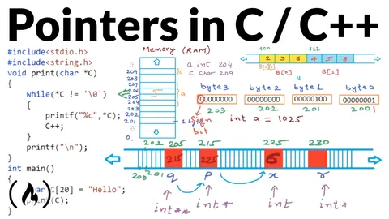
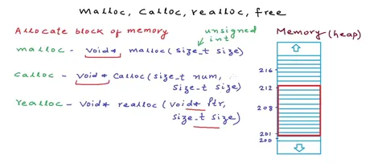
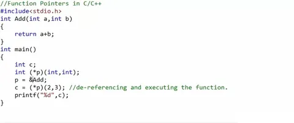

Exploring Pointers
Demystify pointers in C programming with this beginner's guide. Learn pointer syntax, memory management, pointer arithmetic, dynamic allocation, function po
By Sukalyan RoyPublished Updated 5 min read

Pointers #
Pointers are an important aspect of learning programming.
It's a part of every 101 course and used in almost every major algorithm or data structure under the hood for greater performance.
it's good to have a basic understanding of pointers, even though you might not need to use them in your software job directly.
These are a slightly edited version of my own notes when I was learning them a few months ago during my college studies.
In the most basic of terms, a pointer is a variable that stores the memory location of a particular piece of data. We can further hold a pointer to a pointer on and on, but that's not immediately important.
| Syntax | Meaning |
|---|---|
int x |
An integer value |
&x |
The address of x |
int *p |
A pointer to an integer |
p = &x |
Store x's address in p |
*p |
The value at the address stored in p |
-
Pointers are initialized by using
dataType *pointerVariableName;.Value is assigned using the&or "AddressOf" Operator as follows:
pointerVariable = &anotherVariableAfter which the pointer stores the memory address of the concerned variable. -
We can use
*pointerVariableto "Dereference" it. This just means that when we write*pointerVariable, it refers to the Value at the location which the pointer stores. Thus if variablea= 5 andp = &a, then*p= 5. We can assign values to declared but non initialized variables using the followingint a; int *p = &a; *p = 5; // Then if we print a we get value to be 5 -
We we increment a pointer
n, it does not change bynbut instead bysizeOfDatatypeElement * nThus by incrementing a integer type pointer by one, we change the memory location value of it by1*4bytes because each integer type variable takes 4 bytes in the memory.We can only increment or decrement pointers. No other arithmetic is allowed for pointers.
-
The
voidpointer. We can declare a void type pointer to store the starting memory location of values of any type. We don't need to do any typecasting to store the address in it.
The problem is that we cannot do pointer arithmetic or dereference this pointer as the compiler does not know how far the value goes, which it does if the type is specified. We can only store and retrieve the starting address. -
To use pointers to pointers or pointers to pointers to pointers and so on upto n layers. We use
dataType ***...n variableName. For exampleint **q = &pstores the address of pointer variablepin another pointer variableq. -
C by default uses
call by value. This means that whenever a function is called, a copy of the arguments is sent over. All this happens in the Stack part of the memory and once the function is done executing, that part of the stack is cleared up.Now this is not a problem if we are using Global Variables as they have a separate space in the memory.
But if we want to use functions to change a local variable, without reassigning it explicitly, we need to do a
Call by Referencewhere we send the address of the variables to be changed rather than the copy of their values which is done by default. For example, the code to increment a local variableaby 1 using a function Increment can be written asIncrement(&a);and the function itself would bevoid Increment(int *p){ (*p) = (*p) + 1; } -
Using in Arrays
An array is a contiguous block of memory having the same datatype. So when we create an array, it just tells us the type and the size, that is how many elements. Just the Array name gives us the Base address of the Array.
&A[0] == &A == Aall three are the same. and*A == A[0] == *A[0]are all the same.We can get the nth element of an array in many ways,
A[n] == *(A+n) == n[A]We cannot use Pointer Arithmetic on Array Names.
-
Arrays are always passed by reference.
-
Strings are nothing but character arrays in C, and just like Array pointers cannot be changed, so the same applies here.
-
Multidimensional Arrays
2D arrays can be declared asA[i][j]but also as*p[j] = &A;gives youA[0][j]. And you cannot assign array addresses to pointers without doing this specific step. Similarly,B[i][j]=*(B[i] + j)=*(*(B+i) + j) -
When Passing a multidimensional array as a function argument, The formal argument must be
variableName[], and all other third brackets for the dimension must have the accurate dimension specified. For example aC[3][2][2]array would have a formal argument ofA[][2][2]. -
Dynamic Memory Allocation When we use local variables and function calls, they are stored in the Stack part of the memory. But that is fixed when the program starts. If we want to allocate memory as needed during the runtime, we need to store the stuff in the Heap Part of the memory.
To do that we must use functions like malloc() used as
int *p = (int*)malloc(sizeOf(int));and we have to typecast, as malloc returns a void pointer. If there is no memory left to allocate, malloc returns NULL.calloc() realloc() are similar functions, check them out when needed.
free() When we reassign a pointer, the previous value on the heap is still unchanged, and can be mistakenly or maliciously accessed. To prevent this, we must use this function to free that part of memory once the work of that value is over

.
Note: The Memory stack actually is an implementation of the Stack Data Structure but the Heap has nothing to do with the same named Data Structure. Also, this will start making more sense once you study Assembly and realize how C is just an advanced layer on top of it.
Function pointers #
Just like arrays are contiguous blocks of memory storing a particular type of value, functions can be considered a set of instructions in the memory. When we use function pointers, it points to the first instruction of that function in the memory. We declare a function pointer as follows
returnType functionName(Arguments1,arg2...){
body
}
int main(){
returnType (*p)(datatypeOfArgument1,...);
p = &functionName;
// Then to call the function
c = (*p)(argument1,....);
}for example, the following code:

Check this out #
This video is my main resource while learning, and the screenshots are taken from here as well.